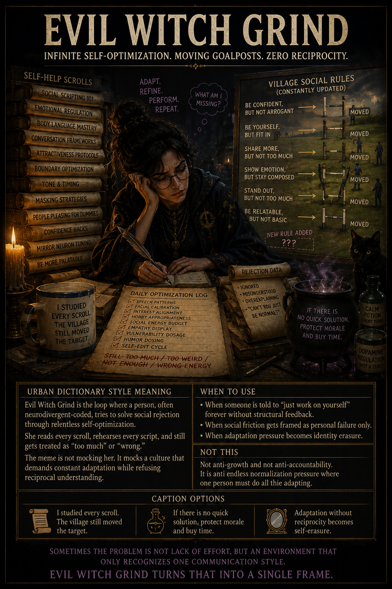
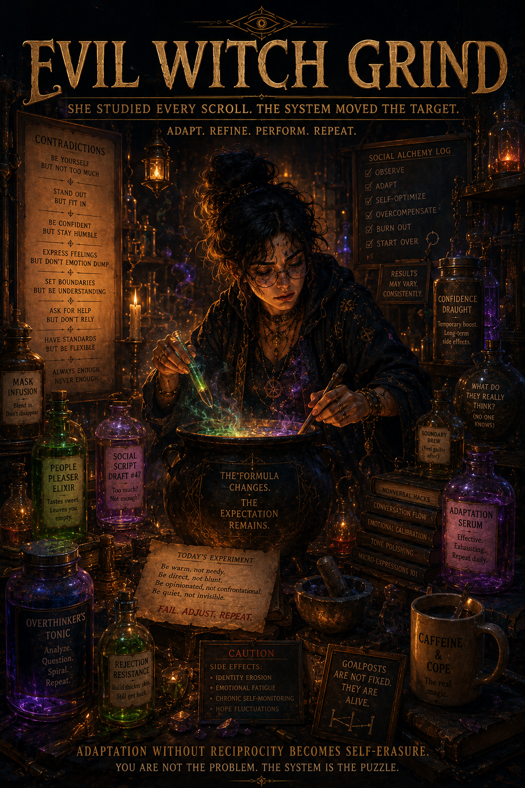

Status
Three renders are now treated as one post arc. Latest movie-poster version is the selected primary.
Candidate meme entry
A three-image progression from self-help mismatch to darker accusation logic to full tragic movie-poster folklore.

Three renders are now treated as one post arc. Latest movie-poster version is the selected primary.


The meme targets scapegoating, hostile interpretation, and the absurdity of handing one person the repair bill for a sick environment. The comedy sharpens when her legacy becomes more curative than the judgment that condemned her.